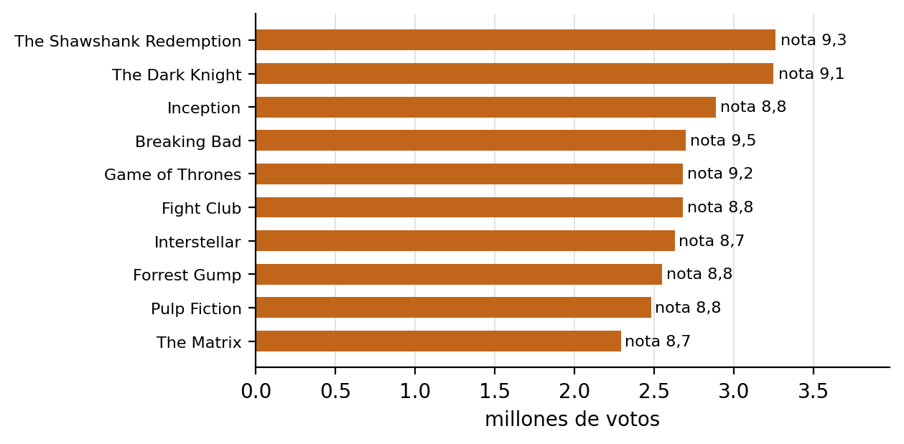
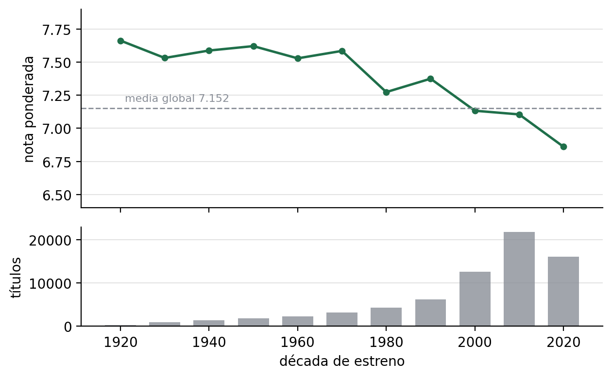

| Asignatura | [asignatura] |
| Institución | [institución] |
| Docente | [docente] |
| Integrantes | [integrante 1] |
| [integrante 2] | |
| Entrega | [fecha] |
Este informe documenta el laboratorio 05 de Apache Spark resuelto sobre el catálogo público de IMDb con la pila exacta que pide el enunciado. El trabajo cubre los cinco puntos de la asignación, que son el cuadro comparativo entre las tres interfaces, la demostración con RDD, la demostración con DataFrame, la conformación del equipo y el guion de la exposición. La contribución propia es una medición de la misma consulta por tres caminos, RDD sobre texto, DataFrame sobre el mismo texto y DataFrame sobre Parquet, que separa lo que aporta el motor de lo que aporta el formato de almacenamiento. Sobre 71.355 títulos y 1.727.597 calificaciones, el primer camino tarda 51.124 milisegundos, el segundo 2.714 y el tercero 1.357.
El informe también recoge cuatro dificultades que no aparecen en la teoría y que cambiaron el código durante la construcción. La primera es una carrera en el canal del proceso trabajador de Python sobre Windows que obliga a evitar first() sobre archivos grandes. La segunda es la memoria, porque doce núcleos con un giga de heap reparten tan poco que el trabajo aborta. La tercera es que los módulos del directorio src no llegan a los trabajadores sin addPyFile. La cuarta es que la función de correlación lee los nulos como cero y devuelve un número equivocado sin avisar. Las tres últimas tienen arreglo y la primera tiene una explicación, y las cuatro quedan documentadas porque son el tipo de error que se repite en silencio.
Palabras clave. Apache Spark, RDD, DataFrame, Dataset, PySpark, Parquet, IMDb, evaluación de rendimiento.
Apache Spark nació en 2010 como respuesta a una limitación concreta de MapReduce, la obligación de escribir cada etapa intermedia en disco. La idea central fue mantener los datos en memoria y describir el cómputo como una cadena de transformaciones perezosas, de modo que el motor pudiera reorganizar el trabajo antes de ejecutarlo. Esa idea se materializó primero en los RDD y después en las interfaces tabulares, que añadieron un esquema, un optimizador y un formato de serialización binaria.
Hoy conviven tres formas de programar sobre el mismo motor. Los RDD ofrecen control fino sobre la distribución de los datos y ninguna ayuda para interpretarlos. Los DataFrame ofrecen columnas nombradas y dejan el plan en manos de Catalyst. Los Dataset añaden tipos estáticos y codificadores, pero solo existen en Scala y Java. Elegir entre las tres no es una cuestión de gusto, sino de qué garantías ofrece cada una y a qué costo.
El objetivo general es construir un caso completo y reproducible que permita comparar las tres interfaces con evidencia propia y no solo con la documentación. Los objetivos específicos son los siguientes.
Todo el trabajo corre en un solo equipo con 8 GB de memoria y 12 procesadores lógicos, así que no se levanta un clúster y no se prueba el reparto real entre máquinas. El modo local con dos hilos basta para que aparezcan los intercambios de datos y para que las diferencias de tiempo sean visibles, aunque los valores absolutos dependan de esta máquina y no sean trasladables a un servidor. Las versiones están fijadas a propósito, porque el objetivo es reproducir el entorno de la asignatura y no el más reciente.
IMDb publica dos archivos que cubren todo lo que el taller necesita y que se descargan sin clave ni registro. El primero describe cada título con su clave, su tipo, su año, su duración y sus géneros. El segundo añade la nota media y el número de votos para los títulos que tienen suficientes calificaciones. Los dos vienen en TSV con cabecera y usan la secuencia \N para el valor nulo, un detalle que se convierte en fuente de errores si se ignora.
| Archivo | Comprimido | Sin comprimir | Filas | Contenido |
|---|---|---|---|---|
title.basics.tsv.gz | 219 MB | 1,12 GB | 12.916.450 | Clave, tipo, título, año, duración y géneros |
title.ratings.tsv.gz | 8,3 MB | 30 MB | 1.727.597 | Clave, nota media y número de votos |
La licencia permite el uso personal y no comercial, de modo que el repositorio publica solo una muestra de 5.000 filas y el informe cita la fuente. El crudo completo y el conjunto curado quedan fuera del control de versiones, y un manifiesto con URL, tamaño, fecha y SHA256 permite reconstruirlos sin ambigüedad.
La curaduría aplica cuatro reglas sobre el archivo original. Descarta las filas sin clave, traduce \N a nulo, convierte años y duraciones a enteros y conserva los títulos con mil votos o más salvo los episodios de serie. El último filtro es el que hace viable el ejercicio, porque los episodios son la mayor parte del archivo y aportan poco a las preguntas del taller. Con esas reglas quedan 71.355 títulos de 9 tipos distintos repartidos en 16 décadas.
La tabla de calificaciones no se filtra y conserva las 1.727.597 filas completas. Esa asimetría es deliberada, porque el join de la demostración con RDD debe mostrar tanto las claves que emparejan como las que sobran, y un conjunto ya filtrado escondería justamente el fenómeno que se quiere explicar. El resultado son 71.355 pares emparejados y 1.656.242 claves sin título curado.
La curaduría conserva los nombres originales y añade dos columnas derivadas. La tabla fija el tipo de cada una y el uso que tiene en las demostraciones.
| Columna | Tipo | Origen | Uso en las demostraciones |
|---|---|---|---|
tconst | texto | basics y ratings | Clave del join y del partitionBy |
titleType | texto | basics | countByValue, pivot y filtros |
primaryTitle | texto | basics | regexp_replace y muestras |
startYear | entero | basics | Window por década y filtro temprano |
runtimeMinutes | entero | basics | Correlación con la nota |
genres | texto con comas | basics | explode y pivot |
averageRating | decimal | ratings | takeOrdered y Window |
numVotes | entero | ratings | aggregate y ranking |
decade | entero | derivada de startYear | Agrupación por periodo y Window |
El conjunto curado ocupa 18,8 MB en Parquet y 54,7 MB en texto plano, con 5,9 MB para los títulos y 48,8 MB para las calificaciones. Esa diferencia de casi tres veces es la primera pista de por qué el formato importa, y la medición de la sección 7 la cuantifica.
El repositorio guarda 5.000 filas en data/sample/imdb_sample.csv, con 479 KB, elegidas de forma determinista para que cualquiera pueda repetir la selección. La muestra no alimenta las demostraciones, que trabajan con el conjunto completo, y existe solo para que el proyecto sea inspeccionable sin descargar un giga. Los siete controles de tests/check_data.py verifican el conteo de filas, la ausencia de claves duplicadas, los rangos de nota y de votos, y la coincidencia entre el Parquet y el texto.
El instalador es la pieza que hace reproducible todo lo demás. Descarga Spark 3.3.4, el JDK 11 de Temurin y los binarios de winutils en una carpeta local del usuario, crea un entorno virtual de Python 3.10 y escribe un archivo de entorno que se carga en cada ejecución. No pide permisos de administrador, no toca el JAVA_HOME de la máquina y no depende de que el repositorio esté en una ruta concreta.
La portabilidad se resuelve calculando todas las rutas desde la ubicación del propio script y guardando el resultado en install/spark-env.ps1, que está ignorado por git. El lanzador install/run.ps1 carga ese archivo y fija la memoria del controlador antes de arrancar la máquina virtual, de modo que ninguna demostración necesita argumentos adicionales. La verificación posterior ejecuta doce comprobaciones y la batería de pruebas del instalador suma 38 casos con Pester.
El flujo tiene seis estaciones y cada una produce algo que la siguiente consume. El crudo se descarga una sola vez, la curaduría lo convierte en columnas tipadas y las demostraciones leen ese resultado sin tocar la red.
datasets.imdbws.com
|
v
data/raw/imdb/*.tsv.gz + manifest.json
|
v
data/curated/imdb/titles/ + ratings/ (Parquet)
data/curated/imdb/titles.tsv + ratings.tsv (texto plano)
|
+--> src/rdd_lab.py ---------> salida por consola
|
+--> src/dataframe_lab.py ----> salida por consola y plan fisico
|
+--> src/benchmark.py -------> informe/mediciones.csv
|
v
data/sample/imdb_sample.csv
|
v
informe/informe.pdf + diapositivas/presentacion.pdf
La descarga se reanuda desde el último byte cuando se interrumpe, gracias a una petición por rango sobre el archivo parcial. La curaduría lee el texto por transmisión, sin cargarlo entero en memoria, y escribe Parquet por bloques de 50.000 filas. Ese detalle es el que permite procesar 1,12 GB en un equipo de 8 GB.
spark-lab05/ ├─ install/ instalador, lanzador, verificacion y pruebas Pester ├─ scripts/ descarga, curaduria, muestra y utilidades compartidas ├─ src/ rdd_lab.py, dataframe_lab.py y benchmark.py ├─ tests/ smoke_test.py y check_data.py ├─ data/sample/ muestra de 5.000 filas versionada ├─ informe/ este informe, figuras y mediciones └─ diapositivas/ presentacion
El código sigue un presupuesto de complejidad explícito. Ninguna función pasa de 40 líneas, ninguna anidación supera dos niveles, no hay clases ni decoradores, y todas las dependencias ya vienen con Spark o con el entorno del laboratorio. Las tres piezas ejecutables suman 40 funciones y la más larga tiene 28 líneas. El objetivo no es lucir estilo, sino que cualquier integrante pueda explicar cualquier bloque sin preparación previa.
Comparar las tres interfaces exige fijar antes qué se mira. Los seis criterios que usa este trabajo son el nivel de abstracción, el tipado, la optimización, la serialización, la disponibilidad en cada lenguaje y el costo de escritura. Los cuatro primeros vienen de la documentación de Spark y de los artículos originales, y los dos últimos se apoyan en la experiencia de este laboratorio.
| Criterio | RDD | DataFrame | Dataset |
|---|---|---|---|
| Nivel de abstracción | Colección distribuida de objetos | Tabla con esquema y nombres de columna | Tabla tipada con un codificador |
| Tipado | Dinámico, el usuario interpreta cada elemento | Esquema en tiempo de ejecución | Estático en Scala y Java |
| Verificación en compilación | No existe | No existe | La ofrece el compilador |
| Optimización | Ninguna, el usuario decide el plan | Catalyst y Tungsten | Catalyst y Tungsten con codificadores |
| Serialización | Java o Kryo | Binaria de Tungsten | Binaria guiada por el codificador |
| API disponible en Python | Sí | Sí | No |
| Casos de uso | Control fino y datos sin estructura | ETL, SQL y analítica tabular | Dominios tipados sobre la JVM |
| Depuración | Errores en tiempo de ejecución | Plan físico legible con explain | Errores de tipo antes de ejecutar |
| Medición en la misma consulta | 51.124 ms sobre TSV | 2.714 ms sobre TSV y 1.357 ms sobre Parquet | No aplica en Python |
| Líneas de código | Más, por el parseo manual | Menos, por las columnas nombradas | Intermedio, con clases del dominio |
La fila de medición es la única que no se puede copiar de la documentación, y por eso es la que da valor al cuadro. Las tres cifras salen de la misma consulta, la nota media ponderada por votos agrupada por década, ejecutada sobre los mismos 71.355 títulos con las mismas ocho particiones de intercambio. La diferencia entre las dos primeras columnas mide el efecto del motor y la diferencia entre las dos últimas mide el efecto del formato.
PySpark no expone Dataset, porque el tipo pertenece a Scala y Java y su garantía depende de un Encoder que el compilador pueda resolver. En Python toda la API tabular pasa por DataFrame, que equivale a un Dataset[Row] sin tipado estático. La consecuencia práctica es que la comparación en este lenguaje se reduce a dos columnas y la tercera se explica con código de Scala.
case class Title(tconst: String, titleType: String, startYear: Int, averageRating: Double)
val titles = spark.read.parquet("data/curated/imdb/titles").as[Title]
titles.filter(t => t.startYear >= 2000 && t.averageRating >= 8.0)
.groupBy("titleType")
.avg("averageRating")
El fragmento se ejecuta en la consola de Scala del propio laboratorio, con .\install\run.ps1 shell. La diferencia con la versión de Python no está en el resultado, que es el mismo, sino en cuándo se descubre un error. Si el campo se llama averageRating y se escribe averageRatings, el compilador de Scala lo rechaza antes de ejecutar, mientras que el mismo error en PySpark aparece como una excepción en tiempo de ejecución, después de haber lanzado el trabajo.
La conclusión no es que una interfaz sea mejor que otra, sino que cada una paga un precio distinto. El RDD paga en líneas de código y en tiempo, porque cada elemento se transporta como un objeto de Python y el motor no puede mirar dentro. El DataFrame paga en control, porque el optimizador decide el plan y a veces conviene intervenir con repartition o con sugerencias. El Dataset paga en flexibilidad, porque obliga a definir tipos y solo está disponible en la JVM.
Cuando el dato tiene forma de tabla, el DataFrame gana casi siempre. El RDD se justifica cuando el dato no tiene esquema, cuando hace falta un particionador propio que sobreviva entre etapas o cuando se trabaja con grafos y con operaciones que la API tabular no cubre.
La demostración lee el TSV curado como texto para mostrar el costo de interpretar cada línea a mano, y después encadena ocho funciones sobre pares clave valor. Cuatro son transformaciones y cuatro son acciones, y ninguna aparece en las listas de clase, que son map, filter, flatMap y reduceByKey por un lado y collect, count, take y reduce por el otro. map y filter se usan como apoyo para parsear y limpiar, pero no cuentan como las funciones nuevas.
| Función | Tipo | Qué hace en la demostración | Resultado real |
|---|---|---|---|
mapPartitionsWithIndex | Transformación | Recorre cada partición con su índice y cuenta elementos | Ocho conteos de 8.721 a 9.039 |
distinct | Transformación | Reduce los tipos de título a su conjunto único | Nueve tipos |
partitionBy | Transformación | Reparte por hash de tconst antes del join | Ocho particiones sin huecos |
join | Transformación | Cruza títulos con calificaciones por tconst | 71.355 pares en 39,5 s |
takeOrdered | Acción | Devuelve los diez títulos con más votos | Diez tuplas con sus votos |
aggregate | Acción | Calcula la nota media ponderada por votos | 7,152 sobre 1.503.735.096 votos |
countByValue | Acción | Cuenta títulos por tipo sin reduceByKey | Nueve tipos con su conteo |
foreachPartition | Acción | Escribe un resumen por partición | Ocho líneas en resumen_particiones.txt |
La corrida completa tarda alrededor de 120 segundos y unos 40 de ellos son el join. El extracto siguiente reproduce la consola sin recortes de contenido, y la salida íntegra está en el anexo A.
[rdd] leidos 71355 titulos y 1727597 notas [rdd] titles ocupa 8 particiones con [8883, 9014, 8897, 8897, 8884, 8924, 8885, 8971] elementos [rdd] distinct deja 9 tipos de titulo [rdd] partitionBy ocupa 8 particiones con [8918, 9025, 9004, 8923, 8906, 8721, 9039, 8819] elementos [rdd] join empareja 71355 pares en 39.5 s [rdd] takeOrdered devuelve los 10 titulos con mas votos [rdd] The Shawshank Redemption 9.3 3260058 [rdd] The Dark Knight 9.1 3245703 [rdd] Inception 8.8 2885372 [rdd] aggregate calcula la nota media ponderada 7.152 sobre 1503735096 votos [rdd] demo terminada en 121.3 s

takeOrdered en la demostración con RDD. La etiqueta de cada barra es la nota media del título.El reparto de elementos es casi uniforme, entre 8.721 y 9.039 por partición, porque el archivo de texto se divide por bytes y las líneas tienen un largo parecido. Después de partitionBy el reparto sigue parejo, con una variación de menos del 4 por ciento, lo que confirma que la función de hash distribuye bien las claves. Ese equilibrio es lo que hace que takeOrdered pueda resolverse con un montón pequeño por partición en lugar de ordenar todo el conjunto.
La demostración imprime el número de particiones antes y después de cada paso para que se vea dónde aparece un intercambio de datos. distinct y join lo provocan, y partitionBy lo hace una sola vez para dejar las claves agrupadas. takeOrdered no lo provoca, porque se implementa con un mapPartitions que calcula el montón local y un reduce que mezcla los montones parciales en el controlador.
Ese detalle explica por qué takeOrdered es barato y por qué conviene usarlo en lugar de sortBy cuando solo se necesitan los primeros elementos. También explica por qué take y first son delicados sobre archivos grandes en Windows, un asunto que la sección 8.1 trata con detalle.
En PySpark, partitionBy no ahorra el intercambio del join posterior. La llamada a join se traduce en python_join, que convierte las dos ramas en pares, las une con union y las agrupa con groupByKey. Ese groupByKey crea un particionador nuevo y descarta el anterior, de modo que el trabajo de partitionBy se paga y no se aprovecha.
La comprobación está en el código de la biblioteca, no en la intuición. El archivo pyspark/join.py de la versión 3.3.4 define _do_python_join como una unión de las dos ramas etiquetadas seguida de groupByKey(numPartitions), y join simplemente delega en esa función. En Scala ocurre lo contrario, porque PairRDDFunctions.join consulta el particionador de ambos lados y, si coinciden, evita el intercambio. La diferencia no es una optimización menor, cambia el consejo que se le da a quien programa en Python.
La demostración deja el partitionBy en el código porque el enunciado pide cuatro transformaciones y porque el paso sirve para mostrar el reparto por hash, pero el informe advierte que la ganancia no llega. La comprobación se extendió a cogroup, que también se implementa con una unión y un groupByKey, así que en PySpark no hay forma de que un join reaproveche un particionador previo. La alternativa práctica es no pagar dos intercambios, es decir, quitar el partitionBy y dejar que el join haga el suyo, o mover la consulta a Scala, donde PairRDDFunctions.join compara los particionadores de los dos lados y evita el segundo.
La demostración responde cinco preguntas con las funciones vistas en clase y cuatro más con funciones investigadas. Cada bloque imprime el nombre de la función y su resultado. El plan físico se muestra solo en el bloque de agg, porque repetirlo nueve veces llenaría la consola sin aportar nada nuevo.
| Función | Origen | Pregunta que resuelve | Resultado real |
|---|---|---|---|
select | Clase | Proyecta clave, título, año y nota | 5 de 12 columnas |
filter | Clase | Deja películas desde 1990 con diez mil votos o más | 10.342 filas |
groupBy | Clase | Agrupa por género y década | 346 combinaciones |
agg | Clase | Calcula promedio de nota, suma de votos y conteo | Drama lidera con 780 millones de votos |
orderBy | Clase | Ordena por nota y desempata por votos | Diez títulos con nota 10 |
Window con row_number | Investigada | Tres mejores títulos por género | Podio por cada género |
pivot | Investigada | Nota media por década y tipo de título | Tres columnas de tipo |
explode con split | Investigada | Un renglón por género a partir de la lista | Base de groupBy y pivot |
regexp_replace | Investigada | Normaliza títulos para detectar repetidos | 4.984 títulos repetidos |
La demostración usa además corr y percentile_approx como refuerzo, sin que reemplacen a las cuatro investigadas. La primera sirve para discutir la relación entre duración y nota, y la segunda para comparar la mediana de votos entre tipos de título.
La demostración tarda alrededor de 16 segundos, ocho veces menos que la de RDD sobre el mismo volumen. Buena parte de esa ventaja viene de que lee Parquet en lugar de texto y de que no transporta objetos de Python entre etapas.
[dataframe] leidos 71355 titulos con nota [dataframe] select proyecta 5 de 12 columnas [dataframe] filter deja 10342 peliculas desde 1990 con diez mil votos o mas [dataframe] groupBy produce 346 combinaciones de genero y decada [dataframe] agg calcula nota media, votos y titulos por genero [dataframe] orderBy desempata la nota por cantidad de votos [dataframe] Window con row_number deja tres titulos por genero [dataframe] pivot cruza la decada con tres tipos de titulo [dataframe] regexp_replace encuentra 4984 titulos repetidos [dataframe] corr sin filtrar nulos da -0.129 porque Spark los lee como cero [dataframe] corr entre duracion y nota da -0.056 sobre 68047 titulos [dataframe] demo terminada en 15.9 s
El plan físico del bloque agg muestra las dos etapas de intercambio que Catalyst decide por su cuenta, una para agrupar por género después del explode y otra para ordenar el resultado. La diferencia con la demostración de RDD es que aquí nadie escribió esas etapas, y que el optimizador pudo empujar el filtro y recortar columnas antes de mover datos. Ese recorte es la razón principal de que el mismo trabajo cueste una fracción.
El bloque de orderBy devuelve un resultado que conviene mirar con cuidado. Los primeros puestos por nota son títulos recientes con notas de 10 y entre mil y dos mil votos, acompañados de una retransmisión con 27.014 votos y nota perfecta. Ninguno es una película conocida. El bloque de Window confirma el patrón en cada género, porque el podio se llena de títulos con mil votos y nota máxima mientras las obras populares quedan por debajo.
La figura 2 explica las dos caras del fenómeno. Con pocos votos la nota se dispersa entre 1 y 10, así que basta un puñado de calificaciones altas para llegar al 9,9 y encabezar cualquier orden descendente. Con muchos votos la dispersión se cierra y la mediana sube, porque los títulos que sobreviven a un millón de calificaciones suelen ser buenos. Las dos cosas son ciertas y por eso el podio por nota y el podio por popularidad no coinciden.
Cuando se ordena por nota conviene exigir un mínimo de votos, y cuando se ordena por popularidad conviene mirar la nota como contexto y no como criterio. El taller conserva numVotes en el esquema justamente para poder hacer esa distinción, y el bloque de orderBy la hace visible al desempatar por votos dentro de la misma nota.
El bloque de pivot cruza la década con tres tipos de título y deja ver que las series mantienen una nota media más alta que las películas en casi todos los periodos. La diferencia ronda el punto completo desde 1960 y se estrecha en la década de 2020, cuando el volumen de producción crece y el promedio se acerca al de las películas. El bloque de regexp_replace normaliza los títulos para quitar puntuación y mayúsculas, y encuentra 4.984 títulos repetidos, con The Oscars a la cabeza de la lista.

La figura 3 junta las dos series que explican el resto del informe. La nota media ponderada se mantiene por encima de 7,4 entre 1920 y 1970, baja a 7,27 en los ochenta y termina en 6,86 en la década de 2020, justo cuando el número de títulos se multiplica por siete. La relación no es causal, porque también cambia la forma de calificar y el tipo de producción, pero sirve para mostrar que un promedio simple sobre todo el catálogo esconde una composición muy distinta por periodo.
La medición vive en src/benchmark.py y ejecuta una sola consulta por tres caminos. La consulta agrupa por década y calcula la suma de nota por votos dividida entre la suma de votos, que es la nota media ponderada. El primer camino usa RDD sobre el TSV, el segundo usa DataFrame sobre el mismo TSV con un esquema explícito y el tercero usa DataFrame sobre el Parquet curado.
Cada camino corre dos veces y se conserva la segunda medición, porque la primera incluye el arranque de la máquina virtual, la compilación de las consultas y el calentamiento de la caché del sistema operativo. Antes de escribir el archivo, el script compara las tres salidas y exige que coincidan en las dieciséis filas con una tolerancia de una centésima. Si alguna ruta se desvía, el programa termina con error y no publica el resultado.
| Consulta | Interfaz | Formato | Milisegundos | Respecto a la mejor |
|---|---|---|---|---|
nota_ponderada_por_decada | RDD | TSV | 51.124 | 37,7× |
nota_ponderada_por_decada | DataFrame | TSV | 2.714 | 2,0× |
nota_ponderada_por_decada | DataFrame | Parquet | 1.357 | 1,0× |

Las cifras están en informe/mediciones.csv, que el propio script escribe y que se versiona como evidencia. La medición se repitió en dos sesiones distintas y los tiempos se movieron entre un 1 y un 46 por ciento según la memoria libre del equipo, un detalle que confirma que las cifras absolutas valen dentro de esta máquina y que la comparación solo tiene sentido cuando las tres rutas se miden juntas.
Hay dos factores y conviene no confundirlos. El primero es la interfaz, y explica la diferencia de casi diecinueve veces entre RDD y DataFrame sobre el mismo archivo de texto. El RDD transporta cada línea como una cadena de Python, la interpreta en el proceso trabajador y devuelve objetos que el motor no puede inspeccionar. El DataFrame lee las mismas líneas con un analizador en la JVM, aplica un esquema y mueve datos binarios.
El segundo factor es el formato, y explica la diferencia de dos veces entre los dos caminos de DataFrame. El Parquet guarda tipos, comprime por columnas y permite leer solo las columnas que la consulta necesita, mientras que el TSV obliga a leer la línea completa y a convertir cada campo. La consulta toca tres columnas de diez, así que el ahorro es directo.
La lección práctica es que la elección del formato rinde menos que la elección de la interfaz, pero se acumula con ella. Un equipo que migra de RDD a DataFrame y además cambia el almacenamiento pasa de 51 segundos a poco más de uno, y las dos mejoras son independientes. En un clúster con datos en un sistema distribuido la proporción cambia, aunque la dirección se mantiene.
La primera versión de la demostración con RDD leía la cabecera con first() y filtraba esa línea del resto. El programa fallaba de forma intermitente con java.net.SocketException: Connection reset by peer sobre el canal de escritura, y el proceso trabajador de Python moría sin dejar rastro. La prueba de humo seguía pasando, de modo que el entorno no era el problema.
El diagnóstico salió de aislar la operación. count() y take(3) funcionaban sobre el mismo archivo, y first() fallaba siempre que la partición superaba cierto tamaño. La causa es que first() pide un elemento y cierra el canal en cuanto lo tiene, mientras que el proceso trabajador sigue escribiendo el resto del bloque. En Windows el cierre llega antes de que termine la escritura y el sistema operativo corta la conexión. La solución fue no usar first() y descartar la cabecera dentro del analizador, comparando el primer campo con el nombre de la columna.
La configuración inicial usaba local[4] y fallaba con errores de reserva de memoria que mencionaban el código 1455. El equipo tiene 12 procesadores lógicos y un giga de heap, así que cada tarea recibe una fracción muy pequeña y el sistema operativo no puede comprometer la memoria que la máquina virtual pide. La solución fue bajar a local[2] y fijar ocho particiones de intercambio, con lo que el trabajo entra sin cambiar el resultado.
El lanzador añade además --driver-memory 1g y -Xms64m, de modo que la memoria se reserva de forma explícita y no depende de la configuración global de la máquina. Ese ajuste es la diferencia entre un taller que corre en cualquier equipo de la sala y uno que solo corre en el equipo de quien lo escribió.
La medición reutiliza los analizadores de la demostración con RDD para no duplicar el parseo. La primera versión importaba el módulo y fallaba con ModuleNotFoundError en el trabajador, porque el archivo está en src y esa carpeta solo existe en el proceso controlador. La solución fue registrar el archivo con spark.sparkContext.addPyFile antes de lanzar el trabajo, de modo que Spark lo empaquete y lo envíe a cada trabajador.
La demostración calculaba la correlación entre duración y nota con movies.stat.corr y obtenía menos 0,129. Un cálculo independiente en pandas sobre los mismos datos daba menos 0,056, y la diferencia no era un redondeo. La causa está en que la clase Correlation lee cada celda con getDouble, y ese método devuelve cero cuando el valor es nulo, así que los 3.308 títulos sin duración entraban al promedio como si duraran nada.
La demostración imprime ahora los dos números, el ingenuo y el del filtro isNotNull, y el informe deja constancia porque es el tipo de error que no produce una excepción y por lo tanto pasa desapercibido. La regla que se desprende es simple. Toda función estadística de Spark merece una comprobación previa de nulos y una comparación con un cálculo externo antes de publicar su resultado.
El laboratorio confirma con números propios lo que la documentación sostiene sin medir. Las seis conclusiones siguientes resumen lo aprendido y cada una se apoya en una evidencia que está en el repositorio.
partitionBy y el join, una diferencia real con Scala que conviene conocer antes de optimizar.El cuadro comparativo y las dos demostraciones cubren los cinco puntos del enunciado. La medición añade una fila que no estaba pedida y que resulta ser la más útil, porque obliga a separar dos efectos que suelen presentarse juntos. La exposición queda armada sobre estas mismas cifras y el ensayo con cronómetro es el último paso antes de la entrega.
Quedan tres frentes abiertos. El primero es medir en un clúster pequeño, con dos o tres máquinas, para ver si la proporción entre interfaces se mantiene cuando el intercambio viaja por red. El segundo es probar la API de Dataset en Scala con el mismo esquema, para tener una tercera columna medida y no solo argumentada. El tercero es repetir la consulta con la tabla de calificaciones completa y sin el filtro de mil votos, para cuantificar cuánto del tiempo del join corresponde a las claves que no emparejan.
Ninguno de los tres cambia las conclusiones, pero los tres amplían el cuadro y sirven como continuación natural del taller. El repositorio queda preparado para añadirlos, porque la curaduría es parametrizable y la medición ya compara las salidas antes de publicar cualquier cifra.
Zaharia, M., Chowdhury, M., Franklin, M., Shenker, S. y Stoica, I. (2010). Spark: Cluster Computing with Working Sets. Proceedings of the 2nd USENIX Conference on Hot Topics in Cloud Computing.
Armbrust, M., Xin, R., Lian, C., Huai, Y., Liu, D., Bradley, J., Meng, X., Kaftan, T., Franklin, M., Ghodsi, A. y Zaharia, M. (2015). Spark SQL: Relational Data Processing in Spark. Proceedings of the 2015 ACM SIGMOD International Conference on Management of Data.
Apache Software Foundation. Spark 3.3.4 Documentation. Recuperado de https://spark.apache.org/docs/3.3.4/
Apache Software Foundation. RDD Programming Guide. Recuperado de https://spark.apache.org/docs/3.3.4/rdd-programming-guide.html
Apache Software Foundation. Spark SQL, DataFrames and Datasets Guide. Recuperado de https://spark.apache.org/docs/3.3.4/sql-programming-guide.html
IMDb. IMDb Datasets. Recuperado de https://datasets.imdbws.com/
Apache Parquet. Parquet File Format. Recuperado de https://parquet.apache.org/docs/
El bloque siguiente reproduce la consola de src/rdd_lab.py sin las líneas de registro de Spark. La corrida completa tarda 121,3 segundos.
[rdd] leidos 71355 titulos y 1727597 notas [rdd] titles ocupa 8 particiones con [8883, 9014, 8897, 8897, 8884, 8924, 8885, 8971] elementos [rdd] distinct deja 9 tipos de titulo [rdd] tipos movie, short, tvMiniSeries, tvMovie, tvSeries, tvShort, tvSpecial, video, videoGame [rdd] partitionBy ocupa 8 particiones con [8918, 9025, 9004, 8923, 8906, 8721, 9039, 8819] elementos [rdd] partitionBy coloca cada tconst en una sola particion por hash [rdd] join empareja 71355 pares en 39.5 s [rdd] takeOrdered devuelve los 10 titulos con mas votos [rdd] The Shawshank Redemption 9.3 3260058 [rdd] The Dark Knight 9.1 3245703 [rdd] Inception 8.8 2885372 [rdd] Breaking Bad 9.5 2699694 [rdd] Game of Thrones 9.2 2680062 [rdd] Fight Club 8.8 2679053 [rdd] Interstellar 8.7 2628405 [rdd] Forrest Gump 8.8 2549962 [rdd] Pulp Fiction 8.8 2480571 [rdd] The Matrix 8.7 2291134 [rdd] aggregate calcula la nota media ponderada 7.152 sobre 1503735096 votos [rdd] countByValue devuelve 9 tipos [rdd] movie 53380 [rdd] short 11214 [rdd] tvSeries 2267 [rdd] tvMovie 1913 [rdd] video 1429 [rdd] tvMiniSeries 424 [rdd] tvShort 393 [rdd] tvSpecial 284 [rdd] videoGame 51 [rdd] foreachPartition dejo 8 lineas en resumen_particiones.txt [rdd] demo terminada en 121.3 s
El archivo resumen_particiones.txt queda en la carpeta curada con una línea por partición, y cada línea informa el número de títulos y la suma de votos de esa partición. La suma total de las ocho líneas coincide con el total que reporta aggregate, lo que confirma que ninguna partición se perdió en el camino.
El bloque siguiente reproduce la consola de src/dataframe_lab.py sin las líneas de registro y con las tablas que Spark imprime con show. La corrida completa tarda 15,9 segundos.
[dataframe] leidos 71355 titulos con nota [dataframe] select proyecta 5 de 12 columnas +---------+------------------+---------+-------------+--------+ | tconst| primaryTitle|startYear|averageRating|numVotes| +---------+------------------+---------+-------------+--------+ |tt0071036| Porridge| 1974| 8.3| 7657| |tt0071040| Rhoda| 1974| 6.8| 3333| |tt0071041| Rising Damp| 1974| 7.7| 3271| |tt0071042|The Rockford Files| 1974| 8.2| 13091| |tt0071050| Shazam!| 1974| 6.5| 1882| +---------+------------------+---------+-------------+--------+ [dataframe] filter deja 10342 peliculas desde 1990 con diez mil votos o mas +------------------------------+---------+--------+ | primaryTitle|startYear|numVotes| +------------------------------+---------+--------+ | The Match Factory Girl| 1990| 14018| | Three Men and a Little Lady| 1990| 29091| |The Adventures of Ford Fair...| 1990| 20493| | Agneepath| 1990| 10115| | Air America| 1990| 32888| | Alice| 1990| 16499| | Another 48 Hrs.| 1990| 48359| | Arachnophobia| 1990| 82195| +------------------------------+---------+--------+
[dataframe] groupBy produce 346 combinaciones de genero y decada +------+------+-----+ | genre|decade|count| +------+------+-----+ | Drama| 2010|11234| | Drama| 2020| 8342| |Comedy| 2010| 7264| | Drama| 2000| 6346| |Comedy| 2000| 4715| |Comedy| 2020| 4646| |Action| 2010| 4411| | Crime| 2010| 3263| +------+------+-----+ [dataframe] agg calcula nota media, votos y titulos por genero +---------+----------+---------+-------+ |genre |nota_media|votos |titulos| +---------+----------+---------+-------+ |Drama |6.632 |780182598|36722 | |Action |6.255 |455854395|13598 | |Comedy |6.414 |454673995|24345 | |Adventure|6.473 |392075848|9431 | |Crime |6.529 |312035520|11536 | |Thriller |5.926 |245855804|9141 | |Romance |6.501 |173767428|10769 | |Sci-Fi |5.747 |173354277|3478 | +---------+----------+---------+-------+
[dataframe] orderBy desempata la nota por cantidad de votos +------------------------------+---------+-------------+--------+ | primaryTitle|startYear|averageRating|numVotes| +------------------------------+---------+-------------+--------+ | IShowSpeed: Early Stream!| 2021| 10.0| 27014| | Mayookha| 2026| 10.0| 2120| |Sohla: Celebration Under th...| 2026| 10.0| 1253| | Grief 97% Stream 361| 2026| 9.9| 1860| | Anakapalli| 2026| 9.9| 1772| | Red Sea Film Fest 2024| 2025| 9.9| 1107| | All Pass| 2026| 9.9| 1085| | Maa Ramudu Andarivadu| 2026| 9.9| 1016| +------------------------------+---------+-------------+--------+ [dataframe] Window con row_number deja tres titulos por genero +---------+--------+-------------------------+-------------+ | genre|posicion| primaryTitle|averageRating| +---------+--------+-------------------------+-------------+ | Action| 1| Grief 97% Stream 361| 9.9| | Action| 2| Anakapalli| 9.9| | Action| 3| Maa Ramudu Andarivadu| 9.9| | Adult| 1|Pirates II: Stagnetti'...| 7.4| | Adult| 2| Pirates| 7.0| | Adult| 3| Taboo II| 7.0| |Adventure| 1| Red Dead Redemption II| 9.8| |Adventure| 2|The Witcher 3: Wild Hu...| 9.7| |Adventure| 3|The Lord of the Rings:...| 9.7| |Animation| 1|Rascal Does Not Dream ...| 9.5| |Animation| 2|Avatar: The Last Airbe...| 9.3| |Animation| 3|Steel Ball Run: JoJo's...| 9.3| +---------+--------+-------------------------+-------------+
[dataframe] pivot cruza la decada con tres tipos de titulo +------+-----+--------+-------+ |decade|movie|tvSeries|tvMovie| +------+-----+--------+-------+ | 1920| 7.03| null| null| | 1930| 6.79| null| null| | 1940| 6.8| 7.8 | null| | 1950| 6.65| 7.74 | 5.9| | 1960| 6.61| 7.44 | 6.07| | 1970| 6.46| 7.52 | 6.56| | 1980| 6.27| 7.31 | 6.65| | 1990| 6.33| 7.26 | 6.3| | 2000| 6.2| 7.15 | 5.94| +------+-----+--------+-------+ [dataframe] regexp_replace encuentra 4984 titulos repetidos +------------------+-----+ |titulo_normalizado|count| +------------------+-----+ | the oscars| 13| | mother| 12| | monster| 12| | cinderella| 12| | dracula| 11| | the game| 10| | the return | 10| | beauty | 10| +------------------+-----+ [dataframe] corr sin filtrar nulos da -0.129 porque Spark los lee como cero [dataframe] corr entre duracion y nota da -0.056 sobre 68047 titulos [dataframe] demo terminada en 15.9 s
El plan físico que imprime el bloque de agg ocupa varias decenas de líneas y se omitió del anexo para no repetir una estructura que el lector puede reproducir con una sola ejecución. El plan se genera con explain() y muestra las dos etapas de intercambio que Catalyst decide para agrupar y ordenar.